Figure it Out
Q1. Do you see any line of symmetry in the figures at the start of the chapter? What about in the picture of the cloud?
Ans. Yes, there are 6, 4 and 1 lines of symmetry in the figures of flower, rangoli and butterfly respectively. There is no line of symmetry in the figures of pinwheel and cloud.
Q2. For each of the following figures, identify the line(s) of symmetry if it exists.
Ans.
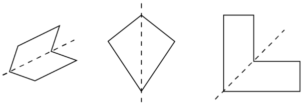
Q. Is there any other way to fold the square so that the two halves overlap? How many lines of symmetry does the square shape have?
Ans. No, there is no other way to fold the square.
The square shape has 4 lines of symmetry.
Q. We saw that the diagonal of a square is also a line of symmetry. Let us take a rectangle that is not a square. Is its diagonal a line of symmetry?
Ans. No, Rectangle’s diagonal is not a line of symmetry.
Q. What if we reflect along the diagonal from A to C? Where do points A, B, C and D go? What if we reflect along the horizontal line of symmetry?
Ans. If we reflect along the diagonal from A to C, D occupies the position occupied by B earlier. A and C remain at the same place.
If we reflect along the horizontal line of symmetry, D and C occupies the position earlier occupied by A and B respectively.
Q1. In each of the following figures, a hole was punched in a folded square sheet of paper and then the paper was unfolded. Identify the line along which the paper was folded. Figure (d) was created by punching a single hole. How was the paper folded?
Ans.
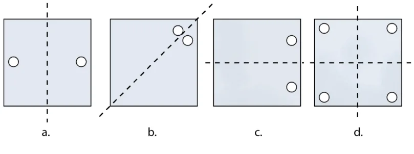
For figure (d), paper was folded vertically and then horizontally or vice versa.
Q2. Given the line(s) of symmetry, find the other hole(s):
Ans.
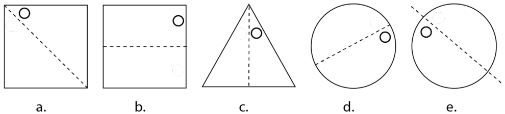
Q4. After each of the following cuts, predict the shape of the hole when the paper is opened. After you have made your prediction, make the cutouts and verify your answer.
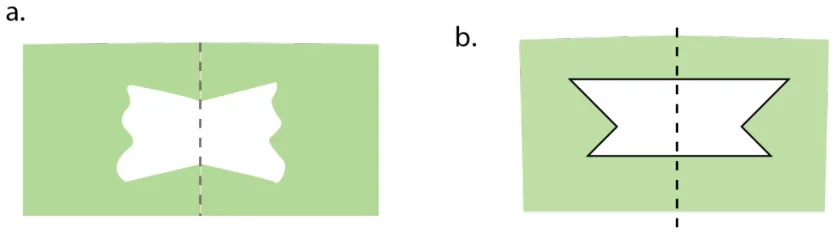
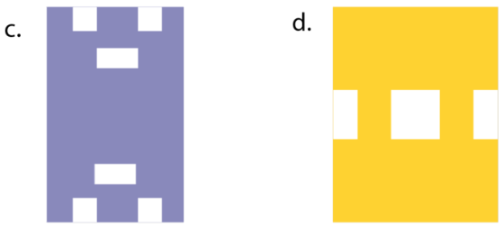
Q5. Suppose you have to get each of these shapes with some folds and a single straight cut. How will you do it?
- The hole in the centre is square.
- The hole in the centre is a square.
Note: For the above two questions, check if the 4-sided figures in the centre satisfy both the properties of a square.
Ans. a. At first fold the paper horizontally then vertically.
Now cut a small square at the center (all sides closed corner).
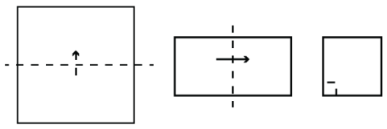
- At first fold the paper horizontally then vertically.
Now at closed corner, cut along with a slanting line.
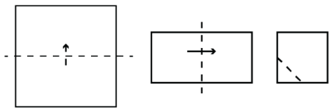
Q6. How many lines of symmetry do these shapes have?
Ans. a.
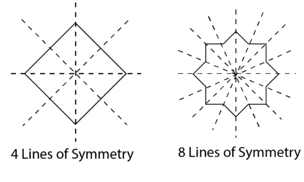
- A triangle with equal sides and equal angles.
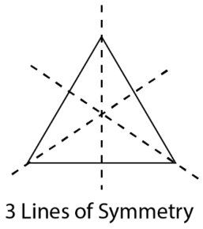
- A hexagon with equal sides and equal angles.
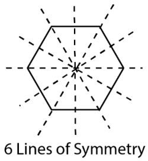
Q7. Trace each figure and draw the lines of symmetry, if any:
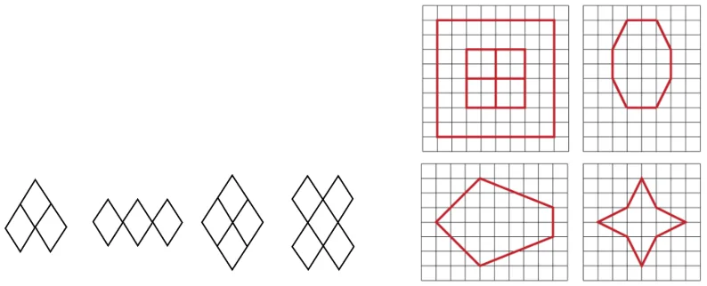
Ans.
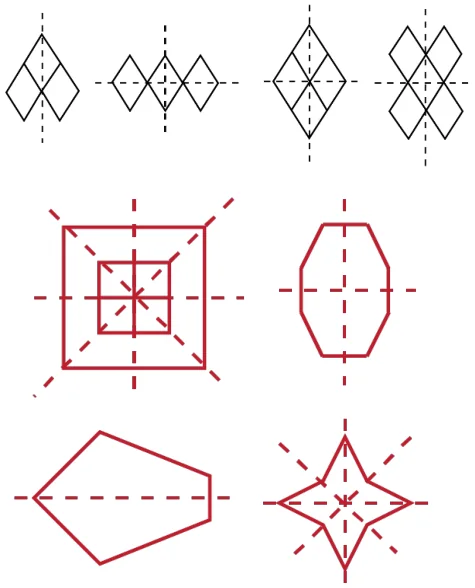
Q8. Find the lines of symmetry for the kolam below.
Ans.
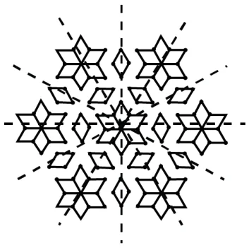
Q9. Draw the following.
- A triangle with exactly one line of symmetry
- A triangle with exactly three lines of symmetry
- A triangle with no line of symmetry
Is it possible to draw a triangle with exactly two lines of symmetry?
Ans. a.
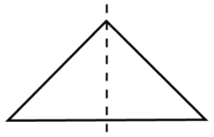
b.
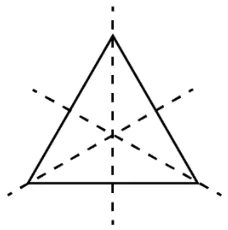
c.
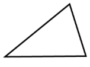
No, it is not possible to draw a triangle with exactly two lines of symmetry.
Q10. Draw the following. In each case, the figure should contain at least one curved
boundary.
- A figure with exactly one line of Symmetry
- A figure with exactly two lines of symmetry
- A figure with exactly four lines of symmetry
Ans.
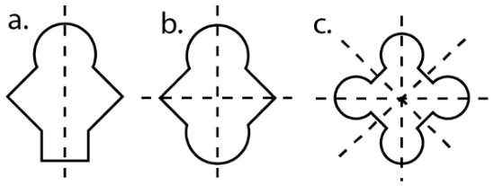
Q11. Copy the following on squared paper. Complete them so that the blue line is a line
of symmetry. Problem (a) has been done for you.
Hint: For (c) and (f), see if rotating the book helps!
Ans.
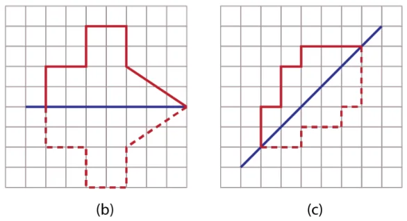
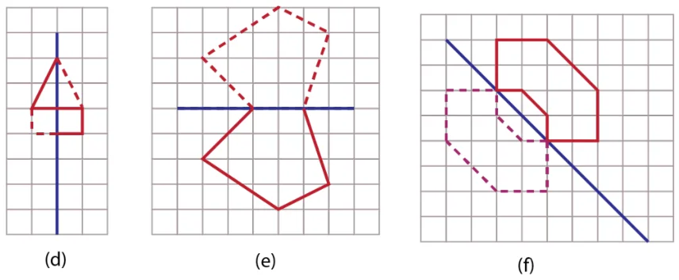
Q12. Copy the following drawing on squared paper. Complete each one of them so that
the resulting figure has the two blue lines as lines of symmetry.
Ans.
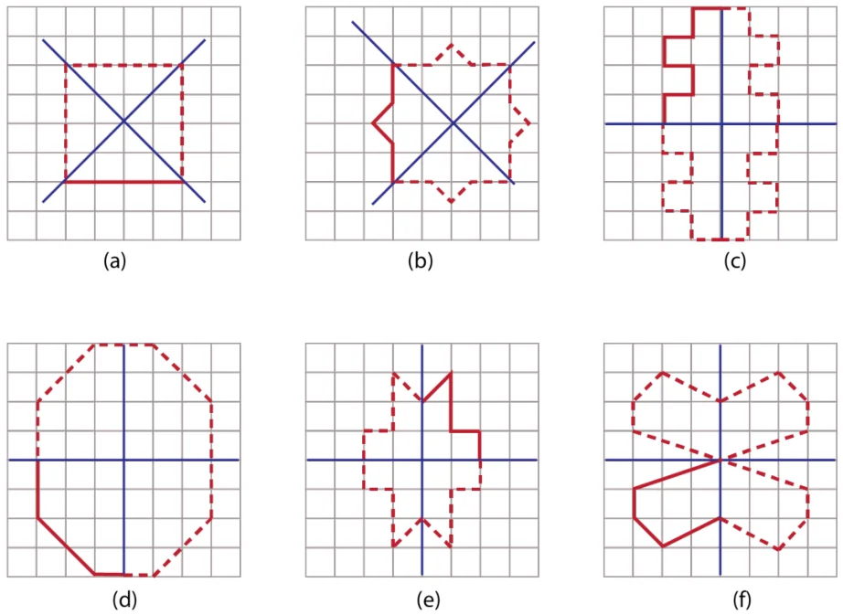
Q13. Copy the following on a dot grid. For each figure draw two more lines to make a
shape that has a line of symmetry.
Ans.
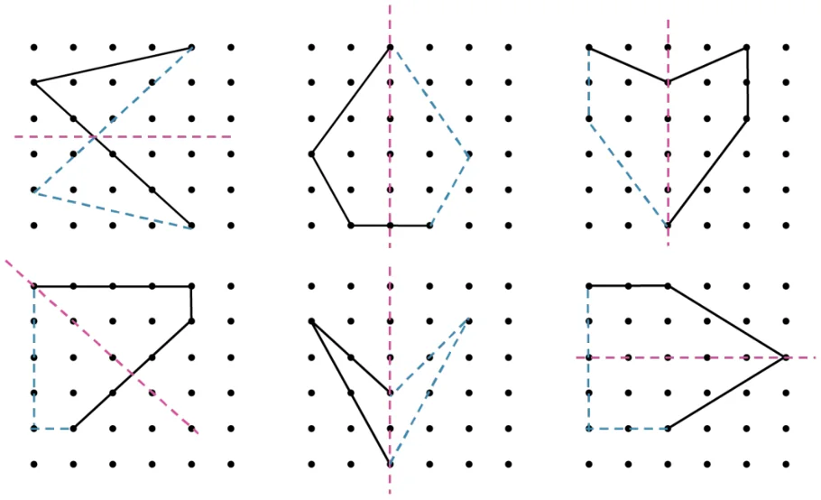
Section 9.2
Page no. 235
Can you draw a figure with radial arms that has a) exactly 5 angles of symmetry, b) 6 angles of symmetry? Also find the angles of symmetry in each case.
Hint: Use 5 radial arms for the first case. What should the angle between two adjacent radial arms be?
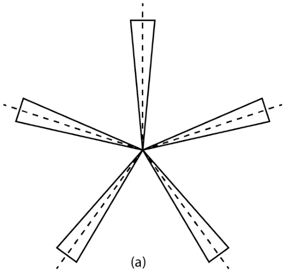
Ans.
Angles of symmetry \(= 72 ^{\circ}\) , \(144 ^{\circ}\) , \(216 ^{\circ}\) , \(288 ^{\circ}\) , \(360 ^{\circ}\) .
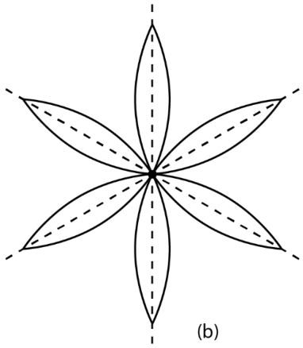
Angles of symmetry \(= 60 ^{\circ}\) , \(120 ^{\circ}\) , \(180 ^{\circ}\) , \(240 ^{\circ}\) , \(300 ^{\circ}\) , \(360 ^{\circ}\) .
Consider a figure with radial arms having exactly 7 angles of symmetry. What will be its smallest angle of symmetry? Is the number of degrees a whole number in this case? If not, express it as a mixed faction.
Let us find the angles of symmetry for other kinds of figures.
Ans. \(360 ^{\circ} \div 7 = 51 \frac{3}{7}\)
No, its smallest angle of symmetry is not a whole number.
Page no. 235
Figure it out
Q1. Find the angles of symmetry for the given figures about the point marked.
Ans. a. Angles of symmetry \(= 90 ^{\circ}\) , \(180 ^{\circ}\) , \(270 ^{\circ}\) , \(360 ^{\circ}\)
- Angle of symmetry \(= 360 ^{\circ}\)
- Angles of symmetry \(= 180 ^{\circ}\) , \(360 ^{\circ}\)
Q2. Which of the following figures have more than one angle of symmetry?
Ans. The following figures have more than one angle of symmetry -
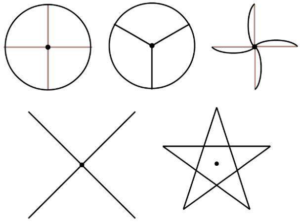
Q3. Give the order of rotational symmetry for each figure:
Ans. Orders of rotational symmetry
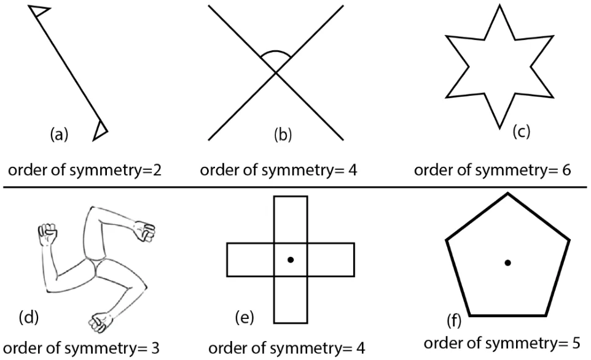
Page no. 236
In each case, the angles are the multiples of the smallest angle. You may wonder and ask if this will always happen. What do you think?
Ans. Yes, the angles of symmetry are always the multiples of the smallest angle. For example,
the second angle is twice the amount of rotation of the first rotation.
True or False
- Every figure will have 360 degrees as an angle of symmetry.
- If the smallest angle of symmetry of a figure is a natural number in degrees, then it is a factor of 360.
Ans. True
True
Section 9.2
Page no. 238
Figure it out
Q1. Color the sectors of the circle below so that the figure has i) 3 angles of symmetry, ii)
4 angles of symmetry, iii) what are the possible numbers of angles of symmetry you can obtain by coloring the sectors in different ways?
Ans.
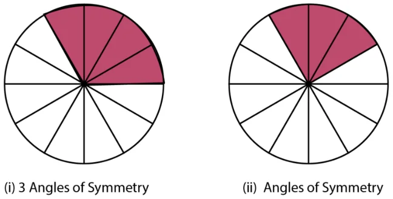
3 Angles of symmetry 4 angles of symmetry 12 angles of symmetry are possible to obtain.
Q2. Draw two figures other than a circle and a square that have both reflection symmetry
and rotational symmetry.
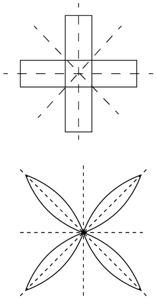
Ans.
Numbers of line symmetry \(= 4\)
Order of rotational symmetry \(= 4\)
Numbers of line symmetry \(= 4\)
Order of rotational symmetry \(= 4\)
Q3. Draw, wherever possible, a rough sketch of
- A triangle with at least two lines of symmetry and at least two angles of symmetry.
- A triangle with only one line of symmetry but not having rotational symmetry.
- A quadrilateral with rotational symmetry but no reflection symmetry.
- A quadrilateral with reflection symmetry but not having rotational symmetry.
Ans. a.
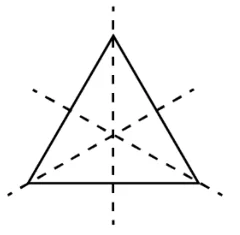
3 lines of symmetry
3 angles of symmetry
b.
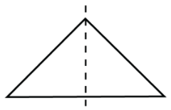
1 line of symmetry
No rotational symmetry
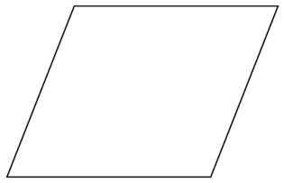
c.
No line of symmetry
2 angles \((180 ^{\circ}\) , \(360 ^{\circ}\) )
- A quadrilateral with reflection symmetry but not having rotational symmetry
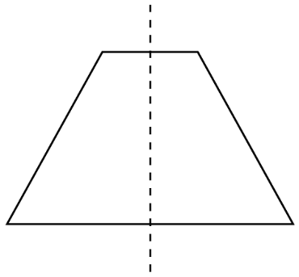
Q4. In a figure, \(60 ^{\circ}\) is the smallest angle of symmetry. What are the other angles of
symmetry of the figure?
Ans. Other angles of symmetry \(= 120 ^{\circ}\) , \(180 ^{\circ}\) , \(240 ^{\circ}\) , \(300 ^{\circ}\) , \(360 ^{\circ}\) .
Q5. In the figure, \(60 ^{\circ}\) in an angle of symmetry. The figure has two angles of symmetry
less then \(60 ^{\circ}\) . What is its smallest angle of symmetry?
Ans. The smallest angle of symmetry \(= 20 ^{\circ}\)
Q6. Can we have a figure with rotational symmetry whose smallest angle of symmetry is
- \(45 ^{\circ}\) ?
- \(17 ^{\circ}\) ? Ans. a. yes, as \(360 ^{\circ}\) is a multiple of \(45 ^{\circ}\) .
- No, as \(360 ^{\circ}\) is not a multiple of \(17 ^{\circ}\) . Q7. This is a picture of the new Parliament Building in Delhi.
- Does the outer boundary of the picture have reflection symmetry? If so, draw the lines of symmetries. How many are they?
- Does it have rotational symmetry around its centre? If so, find the angles of rotational symmetry.
Ans. a. Yes, the outer boundary of the picture has 3 lines of symmetry.
- Yes, the outer boundary has rotational symmetry. The angles of rotational symmetry are \(120 ^{\circ}\) , \(240 ^{\circ}\) , \(360 ^{\circ}\) .
Q8. How many lines of symmetry do the shapes in the first shape sequence in Chapter 1,
Table 3, the Regular Polygons, have? What number sequence do you get?
Ans. Regular Polygon No. of line symmetry
Triangle 3 Quadrilateral 4 Pentagon 5 Hexagon 6 Heptagon 7 Octagon 8 Nonagon 9 Decagon 10
It is a counting number sequence.
Q10. How many lines of symmetry do the shapes in the last shape sequence in Chapter 1,
Table 3, the Koch Snowflake sequence, have? How many angles of symmetry?
Ans. Number of lines of symmetry : 3, 6, 6,6,6
Angles of symmetry : 3, 6, 6,6,6
Q11. How many lines of symmetry and angles of symmetry does Ashoka Chakra have?
Ans. Number of lines of symmetry \(= 24\)
Number of angles of symmetry \(= 24\)